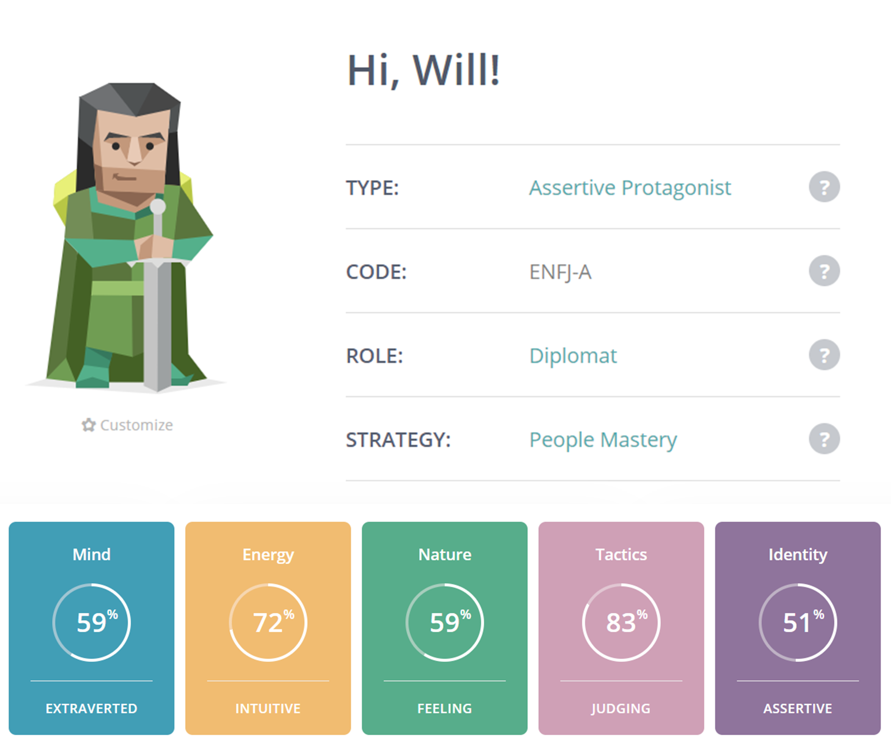
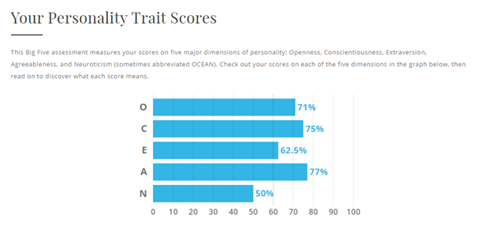

Personal Information

I’m an 18-year-old Australian, born and raised. My parents are both Australian too. Last year (2020), I completed Year 12 VCE and am also currently doing a TAFE course for Cert III Plumbing as I’m doing both this degree part-time and doing a Plumbing Apprenticeship full time! I’m presently 1st year in that too. Interestingly, I’ve never broken a bone, but I’ve dislocated both my elbow and shoulder on my left-hand side! Thankfully, I’m right-handed, so it didn’t affect me too much when it happened, but I don’t want to relive having my arm stuck in a 90 degree cast for four weeks! I also play the saxophone and have completed my AMEB Grade 7 with Honour’s for Tenor Saxophone, which was a proud achievement!
Interest in IT
I’ve had an interest in IT pretty much all my life. My Dad works in the IT field, so I’ve grown up immersed in the terminology and how things work as I would ask him questions about the things that he does. When I was growing up, my first console was a PlayStation 2, and Dad and I spent hours grinding the Lego Star Wars Games and Grand Turismo 4! I have limited IT experience in the ‘field’, but I have been going through some Udemy courses on JavaScript and HTML/CSS as well as completing VCE Software Development which required a big folio-style project which taught me a lot about how to effectively plan projects, outlining each step in Gantt charts and then documenting all the planning process to ensure I have a clear picture of what I need to go, to achieve my desired product. From what I’ve seen so far, these skills will be beneficial for completing this course!
I chose to come to RMIT Online through Open Universities Australia (OUA) because I am working full time whilst completing my degree. I wouldn’t have the flexibility to complete tertiary study and work full time if I had to go onto campus for Uni Classes every few days. Also, after doing length research into different Universities and how they run their Bachelor’s of Information Technology, the system and styles and course structure that RMIT offers suit me the best for where I want to go with my future career! Also, other online courses through OUA have a mandatory in-class, on-campus element every few weeks, and that wouldn’t suit me for the current circumstances I am with working.
Whilst studying at RMIT, I expect to grow and expand my perception of Information Technology as a whole and grow my understanding of the field as a whole. I hope to use this understanding to help me target which areas of IT I enjoy the most and want to pursue a career in later in my degree, which will help me decide what extra units to choose later on in my course after I have completed the core units. Some of the units that I am really looking forward to studying include the ‘Minor in Internet Design’ and the ‘iPhone Software Engineering’ unit. Whether I choose to do them or not will change down the track, depending on what discoveries I make along the way, but as of now, they’re some of the units that I’m excited to complete! Something else I expect to learn during my studies is how to better work in a team. I work in a team every day for work, but there is always more to learn, and my favourite part with group work is learning from other people’s ideas and using this to grow my understanding of the field. I’m sure it will have its challenges at times, but I look forward to them, as they will help shape me to be a better team member, leader and problem solver along the way!
Ideal Job
An ideal job that I have found which I would be interested in applying for is this
job at
Murrumbidgee Irrigation as an ICT Systems Engineer!
(View Snapshot)
{kind=link}
This position as an ICT Systems Engineer at Murrumbidgee Irrigation involves understanding cyber security and installing and maintaining ICT infrastructure. There is also an element of providing level 2 technical support, which essentially requires experience and knowledge in the technological solutions used at Murrumbidgee Irrigation to solve technical problems that cannot be solved by the individual or level 1 technical support (BMC Blogs, 2019). This position is appealing because it is located in the beautiful Wagga Wagga & Riverina area, the lifestyle would be very nice. Also, as a plumber, I’m already interested in the crossover between the water industry and technology. This job opportunity branches the two sectors and would allow me to use my experience in the IT and Plumbing fields to help people get the water they need to survive and perform everyday tasks! I enjoy helping people solve problems and am intrigued by the cyber security area and how to best fortify against cyber-attacks.
The skills, qualifications and experience required for this position include:
- Five years of relevant industry experience
- University Level qualifications in Information Technology and Cybersecurity
- Excellent understanding and experience in addressing cyber security issues successfully
- Experience in problem-solving ICT issues, managing problems and the ability to quickly address these
- A passion for IT and a clear interest in being immersed in the changing world of IT
- Clear understanding of building, maintaining and supporting ICT infrastructure systems, cloud services and experience as a Systems Engineer in a Microsoft Windows Server environment.
Out of those skills, qualifications and experience required for the position, I currently only really have a passion for IT and a clear interest in the field. To ensure I overcome this if I wanted to apply for this position, part of the plan for this involves:
- Completing my Bachelor of Information Technology at RMIT Online. Part of this will include choosing subjects to do with Cybersecurity to ensure that I meet the criteria of a solid understanding of this area.
- Finding a base level job in the Information Technology field and gaining experience and understanding of the field to prepare me for future prospects. This would involve learning the best strategies for helping clients with IT issues and building skills to quickly identify problems and have quick and efficient methods to overcome these issues.
- Growing my passion for IT and staying up to date with advancements in the field to stay ahead of the curve and stand out from other potential candidates to potential employers when applying.
Personal Profile
Myer-Briggs Test Result: https://www.16personalities.com/profiles/9f970728accfa 
How-To-Study.com – Learning Style Assessment Result: My learning style according to how-to-study.com is a Visual Learner. According to their website, "Visual learners learn best when information is presented in a written language format or in another visual format such as pictures or diagrams." They then continue to list some suggestions to assist Visual learner to maximise their learning potential (See Here!)
Truity – The Big 5 Personality Test Results: 

After completing these tests, it was almost freaky how accurate they were in some respects, especially the 16 Personalities – Myer Briggs test. After completing the Learning style test, it provided some further insight into how I’m wired, and I now have a better understanding of how I can best learn as a visual learner. The tips and suggestions that they provided at the end of the test were beneficial, and I’ll keep these in mind for the future. I don’t think the learning process can be contained within one area, and I believe that even though one learning style may be more effective than the others, they all work together to create a wholesome learning experience. For example, even though I may be a visual learner, I still rely heavily on listening to lectures and learning through trial and error, which could question the validity of the results. The Big 5 personalities test I did not find that helpful, the results I didn’t expect first off, and there is little explanation for the meaning of the results, especially when you compare that with the results of the 16 personalities test. In regards to the 16 personalities test, I did agree with the result of ENFJ-A, the Protagonist Personality. A lot of the strengths and weaknesses especially resounded with me and how I am as a person. However, as with all the tests, the results can be taken with a grain of salt because personalities can be so complex, making it hard to box someone into just one in the way that this test does. In Summary, whilst these tests helped provide insight for understanding my learning style and personality, I wouldn’t attest to them being an accurate representation of my personality and learning style as a whole.
According to the 16 Personalities test result, I am drawn to leadership roles and helping others succeed. Taking this into account with group work, I would feel drawn to stepping up and leading others who may be struggling and needing some help. However, the issue with this is the balance of helping others and making sure I am on top of everything that I need to be on top of, as well as not coming across as condescending. To overcome this, it may involve taking the time to listen to everyone’s ideas and discussing them in a group, to decide which one is the best one for the group! This is something that would be important for me to remember when working in a group.
When forming a team, it would be essential to make sure that I exercise a lot of grace and patience, especially when being new to the people in this course. When there is a clash of multiple leadership style personalities, there can be lots of power clashes, which are not helpful for the group's success. I’ll need to remember this, keep an open mind, and encourage open discussions so that everyone is comfortable with what we strive to achieve and minimal power clashes occur. Because many a time I have been in a group where multiple people try to lead the group their way, and it just results in bitterness and creates an environment where the other members of the group aren’t excited or willing to do the work that’s required. Despite what the personality tests said about me being a leader, I also don’t mind stepping back and letting others take the lead, which I think could prove very helpful in ensuring a good group dynamic in whatever group I end up in! Being versatile is your best friend when working in a group because even if you disagree, it’s best to compromise to ensure the group produces the best work they can!
Project Idea
My IT project idea is a Water Tank level indication system that links with the CFA to provide vital information on water availability in the case of a bushfire occurring nearby. Essentially, how it would work, a sensor system is set up in the client’s water tank; this sensor collects information on how much water is available in the tank. It would also provide data such as the tank is full or getting too low etc., then display this on a mobile or web application. The CFA could gain access to this information via an app login, and then in the case of a bushfire, emergency services can log in and look in that area, how much water is in water tanks, and then be able to plan where to draw water from in case they need it for their firefighting efforts.
There are currently solutions to indicate tank water levels digitally, but not to the extent that my idea goes. The ability for a customer to have a clear view of how much water is available in their water tank would be very helpful, especially during droughts and summer. This idea's significant, innovative side is how the CFA can use this information to fight fires. As Australians know, bushfires can rip through bushland, destroying homes, businesses and even lives in some cases. The CFA must have the water they need to fight fires. This software solution gives them an in-depth overview of what water they have at their disposal to fight fires, which would prove incredibly useful for a strategic and successful firefighting effort. “The 2019/2020 bushfire season was one of the worst in recent times, in the world” (Hughes, C 2021). According to Statistica.com, 4.3 million hectares of conservation land was burned in this bushfire season, with 13 million hectares burned in NSW and ACT, and an estimated 1.5 billion wildlife animals who lost their habitats in the fires dying across Australia. Bushfires are no joke, so the CFA must know what water is available to fill up their trucks and continue fighting fires.
This software and hardware solution’s features would include:
- See up to date information on how much water is remaining in each water tank, presented in litre’s form as well as percentage capacity. (If multiple tanks are present on a property, the application will display separate information for each tank. There will also be an overview data set available of how much water is available in total on the property.)
- A sensor placed within the tank to detect water levels that then connects to a transmitter mounted on the outside of the tank. It then connects to the internet (depending on if it's available) or contains 4G reception capabilities to transmit the data to servers, updating what’s displayed in the app.
- This water data is also accessible by the CFA, where in case of a bushfire, can see what water is available in the area and prepare a strategy for collecting it. They will be able to see who lives on the property, initiate an alert if they require the water, and communicate with the person/s dwelling on the property.
- This data can be accessed and presented in visually appealing graphs and text form on either a mobile or web application. The design goals are to present the information clearly, in an attractive and easy to read format.
- The customer can choose whether to keep a record of water levels in the tank and use this data to present trends of their water usage, with a ‘Tips’ feature recommending if they should try to change their water usage habits to save water.
- There would be a ‘Guides’ section on the application, giving all the necessary information required to set up and use the system and a troubleshooting guide in case of an error. Also included in this ‘Guides’ section, information would be available on the best actions to make in case of a fire situation. This would include things such as how to prepare and set up an evacuation plan with templates for how they would handle their possessions and other assets.
- This application could also have the potential to work together with state emergency apps in terms of guides and resources to help people best plan in case of a bushfire emergency and ensure the safety of themselves and their family/precious assets.
- There would be customer support available, too, with options to call over the phone, email or set up a video conference in case of an issue with the software or hardware.
- The transmitter and sensor would need to have a rugged design that ensures it will endure harsh Australian elements, being waterproof, dustproof and UV resistant.
- Due to the nature of the data, including names and addresses, it would be necessary for the data traffic to be end-to-end encrypted to ensure that the data of the individuals using the service to be protected and only accessible by the correct parties.
For this IT solution to work, mobile applications would need to be developed for both iOS and Android devices and a responsive web application that possess the ability to display all the data and resources detailed previously. Raspberry Pi’s (working with Raspberry Pi, Pico’s Possibly) installed with the correct sensors to detect water levels and transmit this within a waterproof case would be the ideal hardware solution as they are relatively cheap and easy to set up! A code editor would be required to set up the mobile and web applications and the Bootstrap Open-Source Toolkit to develop attractive, responsive web and mobile applications!
To complete this project, competency would be required in the coding languages of HTML, CSS, and JavaScript and the appropriate languages for developing mobile applications for both iOS and Android devices. A solid understanding of cybersecurity and how to effectively protect data and the applications against viruses and cyber-attacks to ensure peace of mind for users. In a rapidly advancing IT world, finding people equipped with these skills is feasible, as there are many people with an extensive skill set in these area’s that would be crucial to ensure the development of a smooth, attractive application product. Some understanding of how to use Raspberry Pi’s and set them up to sense water levels and then transmit this data would also be required for the hardware side of the project. Another skill required would be teaching the applications to receive the data and then use that and present it in a graphical or easy to read text format.
Once this project is complete, it will provide a unique, innovative platform for clients and the CFA to see water tank level data presented in a clean, easy to read format! It would give the CFA vital information to help them plan firefighting efforts, contain guides and information for clients on how to best prepare for bushfires, and give them advice on what to do in an emergency. The impact of this application would be widespread across Australia and hopefully, become a standard installation with water tanks to equip and prepare Australians for bushfire seasons.
References:
- Seek.com.au 2021, ICT Systems Engineer Murrumbidgee Irrigation, viewed 4 September 2021, https://www.seek.com.au/job/53716194?type=standout%23searchRequestToken=d0a4b0bd-99ce-4fc2-9126-6139765f7b6e
- Kidd, C & Hertvik, J 2019, ‘IT Support Levels Clearly Explained: L1, L2, L3 & More’, blog post, 25 April 2019, viewed 4 September 2020, https://www.bmc.com/blogs/support-levels-level-1-level-2-level-3/
- 16 Personalities n.d., Protagonist Personality ENFJ-A/ENFJ-T, viewed 4 September 2021, https://www.16personalities.com/enfj-personality
- How.To.Study.com, Learning Style Assesment, viewed 5 September 2021, https://www.how-to-study.com/learning-style-assessment/
- Truity.com, The Big Five Personality Test, viewed 5 September 2021, https://www.truity.com/test-results/bigfive/17315/20889810
- Statista.com, Hughes, C 2021, ‘Bushfires in Australia – statistics & facts’, viewed 5 September 2021, https://www.statista.com/topics/6125/bushfires-in-australia/
- Raspberrypi.org n.d., ‘Raspberry Pi Pico’, viewed 5 September 2021, https://www.raspberrypi.org/products/raspberry-pi-pico/
- w3shools.com n.d., ‘HTML Images’, viewed 11 September 2021, https://www.w3schools.com/html/html_images.asp
- w3shools.com n.d., ‘HTML Links’, viewed 11 September 2021, https://www.w3schools.com/html/html_links.asp
- w3schools.com n.d., ‘HTML Tables, viewed 11 September 2021, https://www.w3schools.com/html/html_tables.asp
- w3schools.com n.d., ‘CSS Align’, viewed 12 September 2021, https://www.w3schools.com/css/css_align.asp
- stackoverflow.com, ‘How to make a div 100% height of the browser window’, viewed 18 September 2021, https://stackoverflow.com/questions/1575141/how-to-make-a-div-100-height-of-the-browser-window
- tutorialspoint.com, ‘HTML – Email Links’, viewed 18 September 2021, https://www.tutorialspoint.com/html/html_email_links.htm
- codepen.io, ‘Scroll down icon animation’, viewed 18 September 2021, https://codepen.io/xonic/pen/KWMaqe